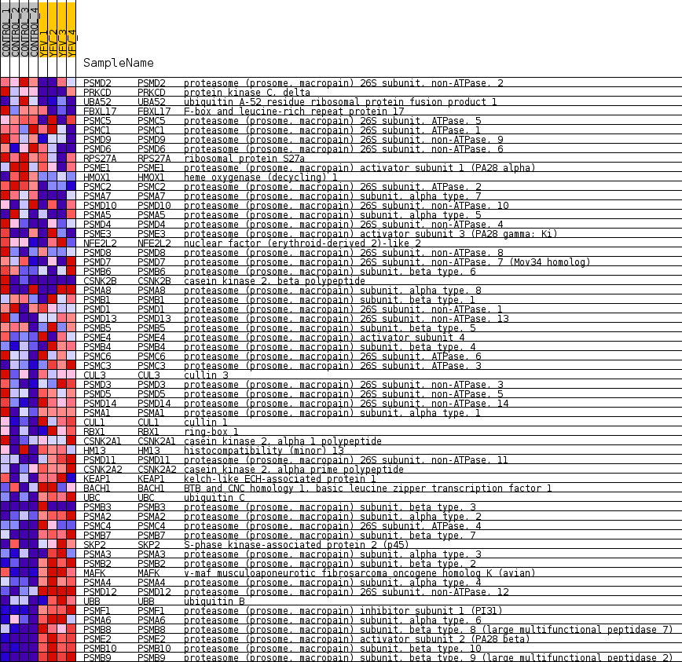
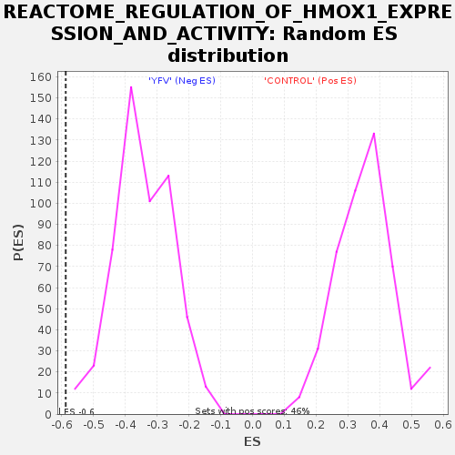

Profile of the Running ES Score & Positions of GeneSet Members on the Rank Ordered List
| Dataset | MATRIZ_GSE99081_collapsed_to_symbols.gsea_CLASE_99081.cls#CONTROL_versus_YFV |
| Phenotype | gsea_CLASE_99081.cls#CONTROL_versus_YFV |
| Upregulated in class | YFV |
| GeneSet | REACTOME_REGULATION_OF_HMOX1_EXPRESSION_AND_ACTIVITY |
| Enrichment Score (ES) | -0.5875738 |
| Normalized Enrichment Score (NES) | -1.706047 |
| Nominal p-value | 0.0 |
| FDR q-value | 0.030898964 |
| FWER p-Value | 0.445 |
| SYMBOL | TITLE | RANK IN GENE LIST | RANK METRIC SCORE | RUNNING ES | CORE ENRICHMENT | |
|---|---|---|---|---|---|---|
| 1 | PSMD2 | proteasome (prosome, macropain) 26S subunit, non-ATPase, 2 | 711 | 0.738 | -0.0185 | No |
| 2 | PRKCD | protein kinase C, delta | 992 | 0.646 | -0.0136 | No |
| 3 | UBA52 | ubiquitin A-52 residue ribosomal protein fusion product 1 | 1969 | 0.488 | -0.0571 | No |
| 4 | FBXL17 | F-box and leucine-rich repeat protein 17 | 2346 | 0.434 | -0.0654 | No |
| 5 | PSMC5 | proteasome (prosome, macropain) 26S subunit, ATPase, 5 | 3127 | 0.329 | -0.1023 | No |
| 6 | PSMC1 | proteasome (prosome, macropain) 26S subunit, ATPase, 1 | 3697 | 0.267 | -0.1283 | No |
| 7 | PSMD9 | proteasome (prosome, macropain) 26S subunit, non-ATPase, 9 | 3732 | 0.263 | -0.1214 | No |
| 8 | PSMD6 | proteasome (prosome, macropain) 26S subunit, non-ATPase, 6 | 3986 | 0.243 | -0.1286 | No |
| 9 | RPS27A | ribosomal protein S27a | 4134 | 0.232 | -0.1297 | No |
| 10 | PSME1 | proteasome (prosome, macropain) activator subunit 1 (PA28 alpha) | 4391 | 0.212 | -0.1382 | No |
| 11 | HMOX1 | heme oxygenase (decycling) 1 | 4475 | 0.204 | -0.1363 | No |
| 12 | PSMC2 | proteasome (prosome, macropain) 26S subunit, ATPase, 2 | 4826 | 0.173 | -0.1520 | No |
| 13 | PSMA7 | proteasome (prosome, macropain) subunit, alpha type, 7 | 5238 | 0.134 | -0.1728 | No |
| 14 | PSMD10 | proteasome (prosome, macropain) 26S subunit, non-ATPase, 10 | 5332 | 0.127 | -0.1742 | No |
| 15 | PSMA5 | proteasome (prosome, macropain) subunit, alpha type, 5 | 5659 | 0.102 | -0.1908 | No |
| 16 | PSMD4 | proteasome (prosome, macropain) 26S subunit, non-ATPase, 4 | 6348 | 0.049 | -0.2317 | No |
| 17 | PSME3 | proteasome (prosome, macropain) activator subunit 3 (PA28 gamma; Ki) | 6661 | 0.029 | -0.2500 | No |
| 18 | NFE2L2 | nuclear factor (erythroid-derived 2)-like 2 | 6683 | 0.027 | -0.2503 | No |
| 19 | PSMD8 | proteasome (prosome, macropain) 26S subunit, non-ATPase, 8 | 6710 | 0.026 | -0.2511 | No |
| 20 | PSMD7 | proteasome (prosome, macropain) 26S subunit, non-ATPase, 7 (Mov34 homolog) | 6854 | 0.018 | -0.2593 | No |
| 21 | PSMB6 | proteasome (prosome, macropain) subunit, beta type, 6 | 7048 | 0.008 | -0.2709 | No |
| 22 | CSNK2B | casein kinase 2, beta polypeptide | 7228 | 0.000 | -0.2820 | No |
| 23 | PSMA8 | proteasome (prosome, macropain) subunit, alpha type, 8 | 9584 | -0.007 | -0.4273 | No |
| 24 | PSMB1 | proteasome (prosome, macropain) subunit, beta type, 1 | 9745 | -0.014 | -0.4367 | No |
| 25 | PSMD1 | proteasome (prosome, macropain) 26S subunit, non-ATPase, 1 | 10102 | -0.030 | -0.4577 | No |
| 26 | PSMD13 | proteasome (prosome, macropain) 26S subunit, non-ATPase, 13 | 10422 | -0.053 | -0.4756 | No |
| 27 | PSMB5 | proteasome (prosome, macropain) subunit, beta type, 5 | 10473 | -0.058 | -0.4767 | No |
| 28 | PSME4 | proteasome (prosome, macropain) activator subunit 4 | 10799 | -0.085 | -0.4939 | No |
| 29 | PSMB4 | proteasome (prosome, macropain) subunit, beta type, 4 | 10839 | -0.088 | -0.4932 | No |
| 30 | PSMC6 | proteasome (prosome, macropain) 26S subunit, ATPase, 6 | 11010 | -0.102 | -0.5002 | No |
| 31 | PSMC3 | proteasome (prosome, macropain) 26S subunit, ATPase, 3 | 11528 | -0.149 | -0.5270 | No |
| 32 | CUL3 | cullin 3 | 11760 | -0.170 | -0.5355 | No |
| 33 | PSMD3 | proteasome (prosome, macropain) 26S subunit, non-ATPase, 3 | 11846 | -0.178 | -0.5346 | No |
| 34 | PSMD5 | proteasome (prosome, macropain) 26S subunit, non-ATPase, 5 | 11911 | -0.185 | -0.5322 | No |
| 35 | PSMD14 | proteasome (prosome, macropain) 26S subunit, non-ATPase, 14 | 11924 | -0.186 | -0.5265 | No |
| 36 | PSMA1 | proteasome (prosome, macropain) subunit, alpha type, 1 | 12891 | -0.287 | -0.5764 | Yes |
| 37 | CUL1 | cullin 1 | 12992 | -0.300 | -0.5722 | Yes |
| 38 | RBX1 | ring-box 1 | 13011 | -0.302 | -0.5630 | Yes |
| 39 | CSNK2A1 | casein kinase 2, alpha 1 polypeptide | 13410 | -0.352 | -0.5754 | Yes |
| 40 | HM13 | histocompatibility (minor) 13 | 13442 | -0.357 | -0.5651 | Yes |
| 41 | PSMD11 | proteasome (prosome, macropain) 26S subunit, non-ATPase, 11 | 13564 | -0.374 | -0.5597 | Yes |
| 42 | CSNK2A2 | casein kinase 2, alpha prime polypeptide | 13861 | -0.419 | -0.5635 | Yes |
| 43 | KEAP1 | kelch-like ECH-associated protein 1 | 14068 | -0.454 | -0.5607 | Yes |
| 44 | BACH1 | BTB and CNC homology 1, basic leucine zipper transcription factor 1 | 14141 | -0.471 | -0.5489 | Yes |
| 45 | UBC | ubiquitin C | 14182 | -0.479 | -0.5349 | Yes |
| 46 | PSMB3 | proteasome (prosome, macropain) subunit, beta type, 3 | 14438 | -0.500 | -0.5334 | Yes |
| 47 | PSMA2 | proteasome (prosome, macropain) subunit, alpha type, 2 | 14672 | -0.535 | -0.5294 | Yes |
| 48 | PSMC4 | proteasome (prosome, macropain) 26S subunit, ATPase, 4 | 14766 | -0.557 | -0.5160 | Yes |
| 49 | PSMB7 | proteasome (prosome, macropain) subunit, beta type, 7 | 14794 | -0.565 | -0.4982 | Yes |
| 50 | SKP2 | S-phase kinase-associated protein 2 (p45) | 14868 | -0.584 | -0.4826 | Yes |
| 51 | PSMA3 | proteasome (prosome, macropain) subunit, alpha type, 3 | 14958 | -0.609 | -0.4672 | Yes |
| 52 | PSMB2 | proteasome (prosome, macropain) subunit, beta type, 2 | 15120 | -0.662 | -0.4543 | Yes |
| 53 | MAFK | v-maf musculoaponeurotic fibrosarcoma oncogene homolog K (avian) | 15206 | -0.692 | -0.4358 | Yes |
| 54 | PSMA4 | proteasome (prosome, macropain) subunit, alpha type, 4 | 15508 | -0.833 | -0.4257 | Yes |
| 55 | PSMD12 | proteasome (prosome, macropain) 26S subunit, non-ATPase, 12 | 15525 | -0.844 | -0.3976 | Yes |
| 56 | UBB | ubiquitin B | 15642 | -0.918 | -0.3732 | Yes |
| 57 | PSMF1 | proteasome (prosome, macropain) inhibitor subunit 1 (PI31) | 15701 | -0.986 | -0.3429 | Yes |
| 58 | PSMA6 | proteasome (prosome, macropain) subunit, alpha type, 6 | 15762 | -1.053 | -0.3103 | Yes |
| 59 | PSMB8 | proteasome (prosome, macropain) subunit, beta type, 8 (large multifunctional peptidase 7) | 16014 | -1.655 | -0.2689 | Yes |
| 60 | PSME2 | proteasome (prosome, macropain) activator subunit 2 (PA28 beta) | 16061 | -1.905 | -0.2062 | Yes |
| 61 | PSMB10 | proteasome (prosome, macropain) subunit, beta type, 10 | 16150 | -2.694 | -0.1189 | Yes |
| 62 | PSMB9 | proteasome (prosome, macropain) subunit, beta type, 9 (large multifunctional peptidase 2) | 16195 | -3.614 | 0.0027 | Yes |

